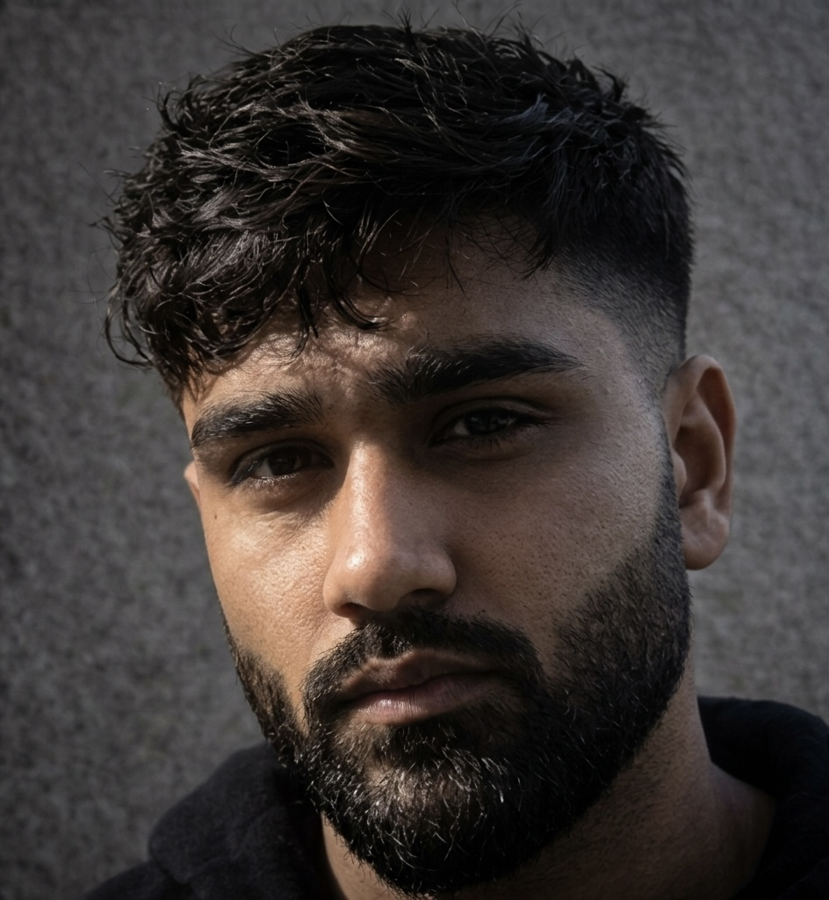

I'm Umair Feroze, an Agentic Workflow Architect & LLM Engineer based in Lahore, Pakistan. I design multi-step agent pipelines with n8n and LangChain that connect CRMs, databases, and APIs — reasoning through tasks instead of just triggering them.

Agent reasoning is only as reliable as the engineering underneath it — orchestration, retrieval, and the infrastructure to run it in production.
Two production builds, end to end — from intent classification to retrieval-augmented answers with citations.
An end-to-end client automation system on n8n that reads incoming Slack messages, classifies intent with an LLM, and routes the task to the right tool — calendar, Notion, or email — before looping back for human approval.
A retrieval-augmented generation pipeline that ingests internal documents, chunks and embeds them into a FAISS vector store, and answers natural-language questions with cited sources — tuned to reduce hallucination on domain-specific queries.
An LLM evaluation framework for terminal-based benchmarking — assessing model performance on real-world coding and agentic reasoning tasks, in the same family as SWE-bench and OSWorld.
A lightweight dashboard pulling live data from the Salesforce REST API, surfacing pipeline metrics with automated anomaly flagging — v1 built in a weekend, refined over three sprints with stakeholder feedback.
I help businesses eliminate bottlenecks by building multi-step AI agents that connect CRMs, databases, Slack, and email — automating decisions that used to take hours down to minutes. These n8n workflows aren't simple if-this-then-that logic; the agent reasons, plans, and executes complex tasks before looping back for human approval.
Alongside the no-code work, I have an AI engineering background as an AI POD Lead specializing in RLHF and Supervised Fine-Tuning. I designed Terminal Bench (TB Harbor 2.0) and authored OSWorld tasks to benchmark agentic reasoning — and I bring that same engineering rigor, containerizing with Docker and testing with pytest, to every n8n deployment.
Looking to build AI-powered workflows, automate business processes, or collaborate on agentic LLM projects? I'm available for freelance work and direct engagements.